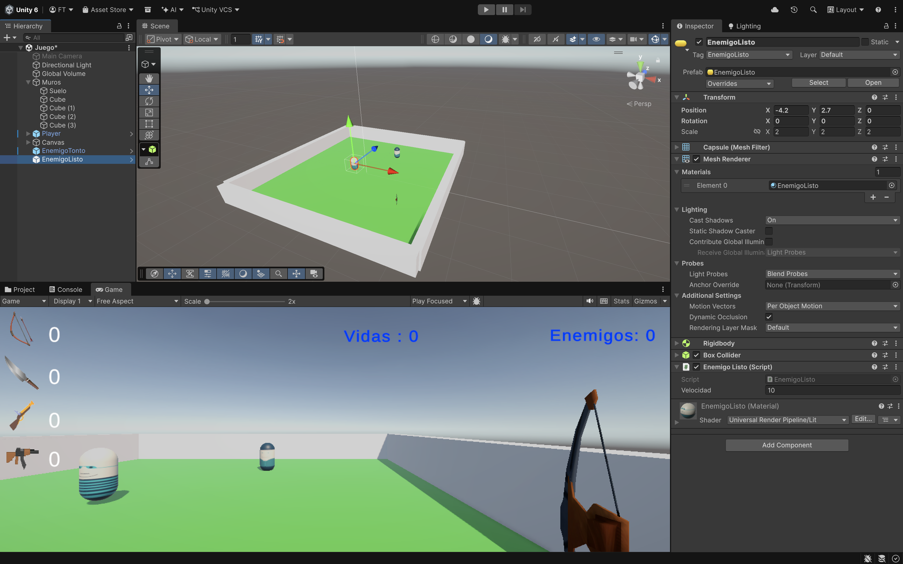

El Enemigo Listo también se movera como el Tonto pero cuando este a una cierta distancia del Player ira hacia el.
Ahora necesitamos otro Script EnemigoListo.cs y se lo añadimos al prefab del EnemigoListo que heredara de EnemigoMovil.cs.
Y arrastramos el Prefab a la Escena.

Como comentamos anteriormente tendremos varios tipos de Enemigos: E.Tonto, E.Listo, E.Estático y el E.Boss. Vamos hacer un script que será el padre que se llamara Enemigo.cs (el que utilizamos para Enemigo Tonto) que contendrá todos los Métodos comunes a todos y tendremos hasta 2 niveles de herencias: La rama de herencias será asi: Enemigo.cs (es el Script padre). - EnemigoMovil.cs. Tanto el E.Tonto, E.Listo y E.Boss se moverán asi que tendrán Métodos comunes como Avanzar()..... - EnemigoTonto.cs. < - EnemigoListo.cs. - EnemigoBoss.cs. - EnemigoEstatico.cs Vamos a montar este sistema para el Enemigo Tonto que acabamos de hacer. Necesitamos crear 2 Scripts: EnemigoMovil.cs y EnemigoTonto.cs. EnemigoMovil.cs hereda de Enemigo y EnemigoTonto.cs hereda de EnemigoMovil. - ¿Que Scripts podriamos tener en el EnemigoMovil y EnemigoTonto para que funcione correctamente?Pista: El Enemigo.cs se queda sin nada de código (de momento).
Si queremos usar algún método en un hijo que este en un padre lo tengo que poner que sea "protected" sirve para permitir que una clase base (padre) comparta información o métodos con sus clases derivadas (hijos), manteniéndolas ocultas para el resto de scripts y componentes externos.